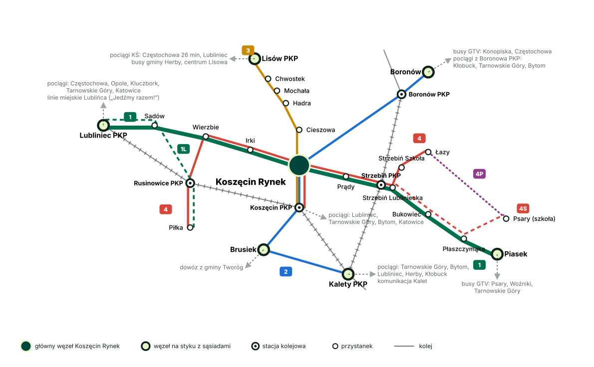

Schemat linii

← przesuń schemat palcem →
Schemat, nie mapa w skali. Gruba linia: linia 1 (co godzinę), przerywana: linia 1 przez Psary w dni nauki. Strzałki: dokąd można jechać dalej z końców linii. Kliknij schemat, żeby go powiększyć, albo pobierz w PDF.
Linie
Jak działa węzeł
Wymóg infrastrukturalny: węzeł na Rynku potrzebuje miejsca dla kilku busów naraz. O :49–:03 stoją tam dojazdówki 2, 3, 4 i 5, a linia 1 przejeżdża w obie strony, czyli w jednej chwili jest tam do 6 busów. Potrzebne są miejsca postojowe dla busów i przystanek koło Boogie Woogie, kosztem części miejsc parkingowych. To jest do zrobienia, ale w centrum już teraz bywa trudno zaparkować, więc przebudowę przystanku warto zaplanować razem z rozwiązaniem parkowania w pobliżu Rynku. Z drugiej strony każdy, kto przyjedzie na Rynek busem, nie zajmuje miejsca parkingowego.
Symulacja ruchu
Poranek dnia roboczego (5:30–10:30), 1 sekunda filmu to 10 minut. Busy jadą proponowanym rozkładem po prawdziwych drogach, razem z samochodami, pociągami i zamykanymi rogatkami. Czerwone odcinki to wolny ruch. Jak to jest liczone?
Jak liczona jest symulacja?
- Program i mapa: SUMO (otwarty symulator ruchu), sieć dróg i torów z OpenStreetMap.
- Busy: jadą proponowanym rozkładem, do 50 km/h w terenie zabudowanym i do 70 km/h poza nim, nie szybciej niż pozwala znak na danej drodze; przyspieszają i hamują jak bus długości ok. 8,5 m. Postój trwa 20 s na węzłach (Rynek, stacje, Strzebiń, Lubliniec), 10 s na zwykłym przystanku i 6 s na przystanku na żądanie, a na węzłach bus czeka do godziny odjazdu z rozkładu.
- Rozkład: ułożony przy średniej prędkości ok. 40 km/h razem z postojami. Symulacja sprawdza, czy przy prawdziwym ruchu da się go dotrzymać i czy przesiadki się udają.
- Samochody: ok. 51 tys. aut na dobę, dobranych tak, żeby zgadzały się z pomiarami ruchu GPR 2020/21 (18 punktów na DW905, DW906, DW907, DW908, DW789, DK11 i DK46), ze szczytami 6–8 i 14–17. Na większości punktów różnica między pomiarem a symulacją to do 5%.
- Pociągi: Koleje Śląskie, POLREGIO i PKP Intercity według rozkładu na dzień roboczy 14 grudnia 2026, każdy stoi na stacji do godziny odjazdu. Pociągi towarowe jeżdżą w przybliżeniu. Rogatki zamykają się przed każdym pociągiem i zatrzymują auta i busy.
- Czego nie liczy: wsiadania pasażerów (postój ma stały czas), pogody, wypadków ani objazdów. Pliki i szczegóły: repozytorium, folder symulacja.
Każda miejscowość: rano do Lublińca
Dzień roboczy, wariant pełny. Przyjazd do Lublińca PKP o 6:22 (praca na 7:00) i 7:22 (szkoła na 8:00).
| Skąd | Jak jechać | Praca na 7:00 | Szkoła na 8:00 |
|---|---|---|---|
| Sadówlinia 1 | linia 1 | 6:10 | 7:10 |
| Wierzbielinia 1 | linia 1 | 6:06 | 7:06 |
| Rzyce Irkilinia 1 | linia 1 | 6:00 | 7:00 |
| Koszęcin Ryneklinia 1 | linia 1 | 5:53 | 6:53 |
| Strzebiń Centrumlinia 1 | linia 1 | 5:44 | 6:44 |
| Bukowieclinia 1 | linia 1 | 5:38 | 6:38 |
| Strzebiń Szkołalinia 4 → w Strzebiniu linia 1 | linia 4 → w Strzebiniu linia 1 | 5:40 | 6:40 |
| Łazylinia 4 → w Strzebiniu linia 1 | linia 4 → w Strzebiniu linia 1 | 5:34 | 6:34 |
| Cieszowalinia 3 → na Rynku linia 1 | linia 3 → na Rynku linia 1 | 5:42 | 6:42 |
| Brusieklinia 2 → na Rynku linia 1 | linia 2 → na Rynku linia 1 | 5:35 | 6:35 |
| Rusinowicelinia 5, bez przesiadki | linia 5, bez przesiadki (Lubliniec :55) | 6:38 | 7:38 |
| Piłkalinia 5, bez przesiadki | linia 5, bez przesiadki (Lubliniec :55) | 6:33 | 7:33 |
Po południu z Lublińca – o której w domu
| Dokąd | Odjazd 14:33 | Odjazd 15:33 | Odjazd 16:33 |
|---|---|---|---|
| Sadów | 14:45 | 15:45 | 16:45 |
| Wierzbie | 14:49 | 15:49 | 16:49 |
| Rzyce Irki | 14:55 | 15:55 | 16:55 |
| Koszęcin Rynek | 15:00 | 16:00 | 17:00 |
| Strzebiń Centrum | 15:12 | 16:12 | 17:12 |
| Bukowiec | 15:18 | 16:18 | 17:18 |
| Strzebiń Szkoła | 15:25 | 16:25 | 17:25 |
| Łazy | 15:31 | 16:31 | 17:31 |
| Cieszowa | 15:10 | 16:10 | 18:10 |
| Brusiek | 15:17 | 16:17 | 17:17 |
| Rusinowicelinia 5 z Lublińca :05 | 15:22 | 16:22 | 17:22 |
| Piłkalinia 5 z Lublińca :05 | 15:27 | 16:27 | 17:27 |
Po lekcjach każda miejscowość jest w domu w niecałą godzinę. Do Rusinowic można też wrócić pociągiem z Lublińca.
Przykładowe podróże
Dzień roboczy. Godziny przesiadek sprawdzone w symulacji ruchu. Własną trasę – także z pociągami KŚ i POLREGIO – sprawdzisz w wyszukiwarce połączeń.
Strzebiń ⇄ Lubliniec
- Strzebiń Centrum 6:44 – linia 1 – Lubliniec PKP 7:22
- Lubliniec PKP 15:33 – linia 1 – Strzebiń Centrum 16:12
Piłka, Rusinowice ⇄ Lubliniec
- Piłka 7:33 (Rusinowice PKP 7:38) – linia 5 – Sadów 7:45 – Lubliniec PKP 7:55
- Lubliniec PKP 15:05 – linia 5 – Rusinowice PKP 15:22, Piłka 15:27
Boronów ⇄ Lubliniec
- Boronów 6:37 – linia 2 – Koszęcin Rynek 6:49
- Koszęcin Rynek 6:55 – linia 1 – Lubliniec PKP 7:22
- Lubliniec PKP 15:33 – linia 1 – Koszęcin Rynek 16:00
- Koszęcin Rynek 16:03 – linia 2 – Boronów 16:15
Łazy → Strzebiń, Koszęcin
- Łazy 7:34 – linia 4 – Strzebiń Szkoła 7:40, Koszęcin PKP 7:54
Fajnie, ale skąd wziąć pieniądze na tyle połączeń?
Siatka to ok. 684 tys. wozokilometrów rocznie. Celem nie jest zarabianie na busach, tylko jak najwięcej połączeń dla mieszkańców przy jak najmniejszym wkładzie gminy. Pomagają w tym rozwiązania, które już działają w wielu gminach w Polsce:
Zasady dopłat opisuje ustawa z 16 maja 2019 r. o Funduszu rozwoju przewozów autobusowych o charakterze użyteczności publicznej (gov.pl – FRPA). W Sejmie jest projekt zmian tej ustawy, więc szczegóły mogą się zmienić.
Mapa
Mapę można przybliżać i przesuwać (dwoma palcami na telefonie). Gruba linia: co godzinę, cienka: co 2 godziny, przerywana: linia 1 przez Psary w dni nauki. Otwórz mapę na całą stronę.
Twoje zdanie: wspólna mapa
Wyszukiwarka połączeń
Proponowane busy razem z rozkładem pociągów Kolei Śląskich i POLREGIO obowiązującym od 13 grudnia 2026. Wybierasz skąd, dokąd i o której – dostajesz połączenie z przesiadkami, a długie czekanie jest od razu zaznaczone. Otwórz wyszukiwarkę.